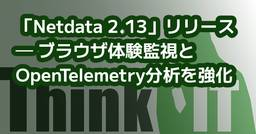
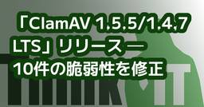
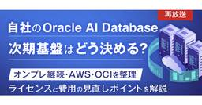
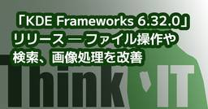
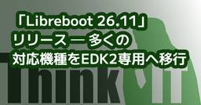
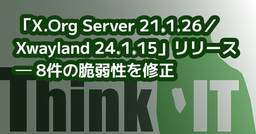

Think IT（シンクイット）
https://thinkit.co.jp/
【Think IT】“オープンソース技術の実践活用メディア” をスローガンに、インプレスグループが運営するエンジニアのための技術解説サイト。開発の現場で役立つノウハウ記事を毎日公開しています。
フィード
「Peppermint OS」Debian版ISOを更新 ─ XorgからXLibreへ移行
Think IT（シンクイット）
「Peppermint OS」Debian版ISOを更新 ─ XorgからXLibreへ移行 Debian 13「Trixie」ベースのパッケージを更新、ISOへのGPG署名も開始kawahara2026年11月22日シェア ポスト はてブ 優先するニュース提供元に追加 Peppermint OS teamは11月17日(現地時間)、Debian 13「Trixie」をベースとするLinuxディストリビューション「Peppermint OS」のDebian版ISOを更新すると発表した。更新版イメージは11月18日付で公開されている。 「Peppermint OS」は、DebianまたはDevuanを基盤とし、Xfceデスクトップを採用する軽量Linuxディストリビューション。基本的なツールのみを収録し、利用者が必要なWebブラウザやアプリケーションを選んで導入できる構成を特徴とする。 今回公開されたのは、新しい固定バージョンではなく、既存のDebian 13「Trixie」版を対象としたインストールISOの更新版。基盤パッケージへ最新の修正を反映するとともに、X11 Display serverデをXorgからXLibreへ変更した。 ハイライトは次の通り。 XLibreは、Xorg Serverから派生したX11ディスプレイサーバ。プロジェクトは、Xorgの上流リポジトリで開発が停滞していることなどを理由に、今後の保守と開発を重視してXLibreを採用したとしている。今回の変更はWaylandへの移行ではなく、Xfceを含む従来のX11デスクトップ環境を維持するためのものとなる。 Pellermint OSはWebサイトから入手できる。(川原 龍人/びぎねっと)[関連リンク]アナウンスSourceForgeリリースアナウンス この記事をシェアしてください シェアする ポストする >ブクマする noteで書く 優先するニュース提供元にThink ITを追加 前の記事「Netdata 2.13」リリース ─ ブラウザ体験監視とOpenTelemetry分析を強化 関連記事この記事の筆者 kawahara kawaharaのプロフィールを見る 筆者の人気記事 Linuxカーネルに重要な脆弱性「CVE-2026-98432」─ IPv4経由で遠隔DoSのおそれ10月31日
3時間前

「Netdata 2.13」リリース ─ ブラウザ体験監視とOpenTelemetry分析を強化
Think IT（シンクイット）
「Netdata 2.13」リリース ─ ブラウザ体験監視とOpenTelemetry分析を強化 Goによる新IPMI実装やNVIDIA Jetson、Cisco Meraki向けコレクターも追加kawahara2026年11月22日シェア ポスト はてブ 優先するニュース提供元に追加 Netdata開発チームは11月19日(現地時間)、オープンソースの監視・可観測性プラットフォーム「Netdata 2.13.0」をリリースした。 「Netdata」は、サーバー、コンテナ、アプリケーション、ネットワーク機器などからメトリクスやログ、トレースを収集し、リアルタイムに可視化する監視ソフトウェア。各ノードで動作するNetdata Agentと、複数ノードを統合管理するNetdata Cloudなどで構成される。 「Netdata 2.13」では、Webブラウザから実際の利用状況を収集するDigital Experience Monitoring(DEM)をプレビューとして導入した。OpenTelemetryトレースからサービス単位の性能グラフや依存関係を作成する機能も強化され、ハードウェア、ネットワーク機器、エッジデバイス向けの監視対象も拡大した。 「Netdata 2.13」のハイライトは次の通り。 「Netdata」は、GitHubから入手できる。(川原 龍人/びぎねっと)[関連リンク]リリースノート この記事をシェアしてください シェアする ポストする >ブクマする noteで書く 優先するニュース提供元にThink ITを追加 前の記事セキュリティテスト向け「BackBox Linux 10」リリース ─ Ubuntu 26.04 LTSベースへ移行 次の記事「Peppermint OS」Debian版ISOを更新 ─ XorgからXLibreへ移行 関連記事この記事の筆者 kawahara kawaharaのプロフィールを見る 筆者の人気記事 Linuxカーネルに重要な脆弱性「CVE-2026-98432」─ IPv4経由で遠隔DoSのおそれ10月31日 0:54 「Apache HTTP Server 2.4.69」リリース ─ 20件の脆弱性を修正10月3日 23:23 「Python 3.15.2/3.14.10/3.13.18/3.12.16/3.11.
3時間前

セキュリティテスト向け「BackBox Linux 10」リリース ─ Ubuntu 26.04 LTSベースへ移行
Think IT（シンクイット）
セキュリティテスト向け「BackBox Linux 10」リリース ─ Ubuntu 26.04 LTSベースへ移行 Linux 7.0とXfce 4.20を採用、Tor経由のDNS処理など匿名モードも強化kawahara2026年11月21日シェア ポスト はてブ 優先するニュース提供元に追加 BackBox Teamは11月19日(現地時間)、セキュリティテスト向けLinuxディストリビューション「BackBox Linux 10」をリリースした。コードネームは「Resolute Raccoon」。 「BackBox Linux」は、Ubuntuを基盤とするオープンソースのLinuxディストリビューション。Webアプリケーションやネットワークの解析、脆弱性評価、パケット解析、フォレンジック、バイナリ解析などに利用するツールを収録し、軽量なXfceデスクトップを採用している。 「BackBox Linux 10」は、Ubuntu 26.04 LTSとの互換性を重視して基盤を更新したメジャーリリース。Linux 7.0とXfce 4.20を採用し、主要なセキュリティテストツールを更新したほか、Web、バイナリ、Windows／Active Directory環境の調査に利用するツールが追加された。 「BackBox Linux 10」のハイライトは次の通り。 匿名モードでは、DNS問い合わせがTorを経由するようになり、動作中のIPv6通信も遮断される。DNS問い合わせやIPv6パケットがTorの外部へ送信され、接続先などの情報が漏れる可能性を抑えるための変更となる。匿名モード終了時には、新しい終了コマンドによって元のネットワーク設定が復元される。 セキュリティツールでは、Webサイトの隠れたパスやディレクトリを探索するffufとgobuster、入力データを変化させて不具合を探すAFL++などが追加された。GDBやLLDBなどによるバイナリ解析も強化され、smbclient、Kerberos、LDAPクライアントによってWindowsネットワークやActive Directory環境の評価にも対応する。 「BackBox Linux」のISOイメージは、Webサイトから入手できる。(川原 龍人/びぎねっと)[関連リンク]リリースアナウンス この記事をシェアしてくだ
1日前
「PHP 8.6.0」リリース ─ 部分関数適用と高性能なPolling APIを導入
Think IT（シンクイット）
「PHP 8.6.0」リリース ─ 部分関数適用と高性能なPolling APIを導入 新しいTime\Durationクラスやclamp()を追加、既存4系列の重要なセキュリティ更新も公開kawahara2026年11月21日シェア ポスト はてブ 優先するニュース提供元に追加 PHP開発チームは11月19日(現地時間)、オープンソースのプログラミング言語「PHP 8.6.0」をリリースした。 「PHP 8.6.0」は、PHP言語の新しい安定系列となるメジャーアップデートリリース。関数の引数の一部をあらかじめ指定する部分関数適用、新しい時間間隔クラス、高性能なI/O監視APIなどが導入された。型安全性やエラー処理、暗号機能、実行性能の改善も行われている。 「PHP 8.6.0」のハイライトは次の通り。 部分関数適用では、「?」や「...」をプレイスホルダーとして使い、一部の引数をあらかじめ設定したClosureを生成できる。コールバックのためだけに短い無名関数を作成する場面を減らし、関数の再利用や処理の組み合わせを簡潔に記述できる。 「Io\Poll」APIは、Linuxのepoll、BSDやmacOSのkqueue、WindowsのWSAPollなど、各OSの仕組みを利用して複数のストリームを監視する。一般的な「stream_select()」が持つ接続数などの制約を避けられ、ReactPHPやAMPHPといったイベントループライブラリの共通基盤として利用できる。 非互換変更や非推奨化も含まれる。セッションでは「session.use_strict_mode」と「session.cookie_httponly」が標準で有効となり、「session.cookie_samesite」の既定値は「Lax」となった。また、finallyブロック内のreturn、mb_ereg()などのmbstring正規表現関数、is_integer()やdoubleval()などの別名関数が非推奨となっている。trim()系関数が標準でフォームフィード文字も削除するなど、既存コードの動作に影響する変更にも注意が必要だ。 PHP 8.6.0は、Webサイトから入手できる。(川原 龍人/びぎねっと)[関連リンク]リリースアナウンス この記事をシェアしてください シェアする ポストする >
1日前

「ClamAV 1.5.5/1.4.7 LTS」リリース ─ 10件の脆弱性を修正
Think IT（シンクイット）
「ClamAV 1.5.5/1.4.7 LTS」リリース ─ 10件の脆弱性を修正 細工されたメールやCHM、OLE2、UPX実行ファイルによるメモリー破損やDoSに対応kawahara2026年11月21日シェア ポスト はてブ 優先するニュース提供元に追加 ClamAV開発チームは11月18日(現地時間)、オープンソースのマルウェア対策ソフトウェア「ClamAV 1.5.5」「1.4.7 LTS」をリリースした。 「ClamAV」は、ウイルスやトロイの木馬などのマルウェアを検出するオープンソースのアンチウイルスエンジン。LinuxやWindows、macOSに対応し、メールゲートウェイやファイルサーバ、コンテナ環境などでも利用されている。 「ClamAV 1.5.5」は通常系列の最新パッチ版、「1.4.7」は長期サポートされる1.4 LTS系列の最新版。いずれも10件のCVEに対応するセキュリティーリリースで、細工されたメール、文書、アーカイブ、実行ファイルなどをスキャンした際に発生するメモリ破損やサービス拒否の問題を修正した。 「ClamAV 1.5.5/1.4.7 LTS」のハイライトは次の通り。 影響範囲は脆弱性によって異なるが、古いものではClamAV 0.71以降が対象となり、いずれもClamAV 1.5.4までが影響を受ける。修正は1.5.5と1.4.7の両方に収録されているため、1.5系列の利用者は1.5.5へ、1.4 LTS系列の利用者は1.4.7へアップデートする必要がある。 ClamAVは、Webサイトから入手できる。(川原 龍人/びぎねっと)[関連リンク]ClamAV 1.5.5／1.4.7リリースアナウンスリリースノート(1.5.5)リリースノート(1.4.7) この記事をシェアしてください シェアする ポストする >ブクマする noteで書く 優先するニュース提供元にThink ITを追加 前の記事「nginx 1.31.9/1.30.7」リリース ─ 最大10件の脆弱性を修正 次の記事「PHP 8.6.0」リリース ─ 部分関数適用と高性能なPolling APIを導入 関連記事この記事の筆者 kawahara kawaharaのプロフィールを見る 筆者の人気記事 Linuxカーネルに重要な脆弱性「CVE-2026-98432」─ I
1日前
なぜこのインシデントは「SEV1」なのか? ——「Incident Severity Levels」という共通言語を導入する 1
1
Think IT（シンクイット）
なぜこのインシデントは「SEV1」なのか? ——「Incident Severity Levels」という共通言語を導入するitoh2026年11月20日SREが語るインシデント対応の実践シェア ポスト はてブ 優先するニュース提供元に追加 はじめに株式会社はてな Embedded SREの西川と申します。「SRE Kaigi 2025」で登壇し、そのご縁で本連載で記事を寄稿させていただくこととなりました。第4回となる今回は「Incident Severity Levels」を取り上げます。「SREが語るインシデント対応の実践」と題した連載企画なので、一般的な内容だけではなく、私自身の経験から「導入の進め方」といった実践的な内容も含めて解説します。「Incident Severity Levels」とはインシデント対応では、関係者間で重大度の認識が揃っていないと対応にぶれが生じます。この認識を揃えるのが、インシデントがビジネスに与える影響の重大度を段階に分けて表す指標となるIncident Severity Levelsです。SREにおけるインシデント対応では「Incident Command System(ICS)」がよく参照されます。ICSは米国で消防などの緊急対応機関向けに整備された標準的な枠組みです。2005年のUSENIX LISAにて、これをITの障害対応にも持ち込もうという提案がBrent Chapmanによってなされました*1。*1: 「Incident Command for IT: What We Can Learn from the Fire Department」(USENIX)Googleの「Site Reliability Engineering: How Google Runs Production Systems」でも、自社のインシデント管理システムはICSに基づくものだと明記されています*2。*2: 「Google SRE - Incident Management: Key to Restore Operations」ただし、ICSが定めているのはIncident Commanderを中心とする役割分担と、職制とは独立した指揮系統です。インシデントに対する重大度の段階については言及されていません。これに対して、影響の大小を評価して
2日前

【KubeCon Japan 2026】AppleのKatie Gamanji氏が生成AI後のクラウドネイティブを解説するセッションを紹介
Think IT（シンクイット）
【KubeCon Japan 2026】AppleのKatie Gamanji氏が生成AI後のクラウドネイティブを解説するセッションを紹介iioka2026年11月20日KubeCon＋CloudNativeCon Japan 2026レポートシェア ポスト はてブ 優先するニュース提供元に追加 KubeCon＋CloudNativeCon Japan 2026から、AppleのPrincipal EngineerのKatie Gamanji氏が行った「The State of Cloud Native: The Shift Towards AI」というタイトルのセッションを紹介する。クラウドネイティブの現在を俯瞰した後に最新のAIとクラウドネイティブの関係、そしてここから何が始まるのか？ これを予想するという意味をタイトルに見ることができる。 Gamanji氏については2019年のKubeCon Europeでのプレゼンテーションが印象的だったが、これについて過去の記事として公開しているので参考にして欲しい。この頃はまだConde Nastに所属しているクラウドネイティブなシステムのエンジニアだったが、今やAppleのPrincipal Engineerというタイトルを持ち、KubeConでは高い頻度で登壇する語り部だ。●参考：KubeCon Europe、2日目のキーノートはSpotifyの失敗事例とIBMのRazeeがポイント2020年に韓国で開催されたミニKubeConともいえるKubernetes Forumでは、Kubernetesで複数のクラスターを管理する機能とAPIについて解説を行い、技術的な深い内容についても的確に解説する知識を持っているエンジニアである。 プレゼンテーションはコンテナ利用の拡大、CNCFのプロジェクトがAI基盤で使われていること、コミュニティを持続させる要因、最後にAIが与える影響についての私感を述べるという構成になっていた。 このスライドではコンテナがLinux Kernelのテクノロジーによって2008年から実現されていることを振り返っているが、実際には社名がDockerに変わる前のdotCloudのSolomon Hykes氏が短いプレゼンテーションとデモをPyCon 2013で行ったことでコンテナが再発見され、自社で大量
2日前

サーバやOSの保守期限、VMware環境の見直しといった節目に考える、Oracle AI Databaseの次期基盤。オンプレ継続・AWS・OCIそれぞれの特性と留意点を整理するWebセミナー
Think IT（シンクイット）
サーバやOSの保守期限、VMware環境の見直しといった節目に考える、Oracle AI Databaseの次期基盤。オンプレ継続・AWS・OCIそれぞれの特性と留意点を整理するWebセミナーitoh2026年11月19日イベント・セミナー2026シェア ポスト はてブ 優先するニュース提供元に追加 Sponsored by: 株式会社アシスト提供：株式会社アシストサーバやOSの保守期限、VMware環境の見直しといった節目をきっかけに、Oracle AI Databaseの次期基盤について判断を迫られる場面が増えています。オンプレミス環境を維持するのか、サーバだけ更改するのか、クラウド移行を検討するのか。選択肢が多いからこそ、何を基準に選べばよいのか迷ってしまう担当者も多いのではないでしょうか。株式会社アシストが開催するWebセミナー「【再放送】自社のOracle AI Database、次期基盤はどう決める？～オンプレ継続・AWS・OCIを整理、ライセンスと費用の見直しポイントを解説～」は、2026年11月10日に開催されたセミナーの再放送です。多くのご要望を受けて、再放送の開催が決まりました。特定の移行先を前提とせず、それぞれの特性や留意点を中立的な立場で整理します。セミナーで取り上げる選択肢オンプレミス環境の維持／サーバだけ更改AWSへの移行(Amazon EC2、Amazon RDS for Oracle、Oracle AI Database@AWS)OCIへの移行Oracle AI Database更改・移行のご相談でよく寄せられる論点も交えながら、ライセンス、費用、性能・可用性といった観点から、それぞれの特性や留意点を解説します。ここが見どころ1. 現在の構成はそのまま移行できるのかOracle AI DatabaseのエディションやRACなどの機能、求める性能・可用性により、選択できる構成は異なります。2. AWSではどのサービスを選択すべきかAWSに移行する場合もAmazon EC2、Amazon RDS for Oracle、Oracle AI Database@AWSなどのサービスから選択することになります。3. Oracleライセンスはそのまま利用できるのか移行先でOracleライセンスをそのまま利用できるのかに加え、検証環境や移行時の並行稼
2日前

「nginx 1.31.9/1.30.7」リリース ─ 最大10件の脆弱性を修正
Think IT（シンクイット）
「nginx 1.31.9/1.30.7」リリース ─ 最大10件の脆弱性を修正 HTTP/2のメモリー破損やTLS 1.3の無限ループ、SNIによる証明書検証回避などに対応kawahara2026年11月19日シェア ポスト はてブ 優先するニュース提供元に追加 nginx.orgは11月18日(現地時間)、オープンソースのWebサーバ「nginx 1.31.9/1.30.7」をリリースした。1.31.9はmainline系列、1.30.7はstable系列の最新版となる。 「nginx 1.31.9/1.30.7」は、多数のセキュリティ問題に対応するアップデート。mainline版の1.31.9では10件、stable版の1.30.7では9件のCVEが修正された。HTTP/2およびHTTP/3、名前解決、メールプロキシ、streamモジュール、TLS処理など、影響の機能は広範囲に渡る。ユーザはアップデートを施すことが強く推奨される。 「nginx 1.31.9/1.30.7」の主な修正点は次の通り。 「nginx」は、Webサイトから入手できる。(川原 龍人/びぎねっと)[関連リンク]Changes(nginx 1.31.9)Changes(nginx 1.30.7)nginxセキュリティアドバイザリ この記事をシェアしてください シェアする ポストする >ブクマする noteで書く 優先するニュース提供元にThink ITを追加 前の記事「Rocky Linux 10.3/9.9」リリース ─ GCC Toolset 16や耐量子暗号対応を導入 次の記事「ClamAV 1.5.5/1.4.7 LTS」リリース ─ 10件の脆弱性を修正 関連記事この記事の筆者 kawahara kawaharaのプロフィールを見る 筆者の人気記事 Linuxカーネルに重要な脆弱性「CVE-2026-98432」─ IPv4経由で遠隔DoSのおそれ10月31日 0:54 「Apache HTTP Server 2.4.69」リリース ─ 20件の脆弱性を修正10月3日 23:23 「Python 3.15.2/3.14.10/3.13.18/3.12.16/3.11.18」リリース ─ 侵害されたeMudhraのCA鍵をブロック10月26日 16:52 「PHP 8.5.12」な
3日前
【クラウドエンジニア編】「野良リソース」を撃退する――便利さに潜むコスト肥大化を防ぐPMOのルール設計
Think IT（シンクイット）
【クラウドエンジニア編】「野良リソース」を撃退する――便利さに潜むコスト肥大化を防ぐPMOのルール設計itoh2026年11月19日エンジニアが現場で使えるPMOの失敗回避術シェア ポスト はてブ 優先するニュース提供元に追加 はじめに「エンジニア」とひと口に言っても、ソフトウェア、フロントエンド、サーバーなど、その役割によって現場で直面するトラブルはさまざまです。本連載では、PMO(Project Management Office)として多くの現場を経験してきた甲州が、それぞれのエンジニアが抱える課題の回避策を深掘りしていきます。第10回の主役は、「クラウドエンジニア(クラウドインフラ担当)」です。AWS、Google Cloud、Microsoft Azureをはじめとするパブリッククラウドは、必要な時に必要な分だけリソースを調達できる非常に便利な仕組みです。しかし、その「手軽さ」こそが、プロジェクトの予算を食いつぶす最大の要因にもなり得ます。月初の定例会議で、PMが請求画面を共有した瞬間に会議室が凍りつく。「今月のクラウド利用料、見積もりの3倍になっているんだけど、誰が何に使ったの？」そう聞かれて、胸を張って即答できる現場がどれほどあるでしょうか。クラウドにおけるコストの爆発は、単なる技術的な設定ミスではなく「誰が見て、誰が止めるのか」という運用ルールとガバナンスの欠如から発生します。今回は、クラウドエンジニアが直面する「想定外のコスト膨張」のメカニズムと、それを未然に防ぐPMOの介入術を解説します。【失敗事例】作るときは誰も止めないのに、請求が来たら全員で「犯人探し」これは、ある製造業向け会員Webサービスの刷新プロジェクトで実際に起きた事例です。そのプロジェクトでは、アプリ開発、データ連携、性能試験の3チームが、開発・検証・本番の3環境を用いて作業を進めていました。プロジェクト開始時の提案・見積もり段階では本番環境の月額費用のみが積算され、開発・検証環境の費用は「実費精算」と1行書かれていただけでした。作業スピードを優先するため、各チームのエンジニアには管理者権限が渡され、リソースに対する命名ルールや「タグ(用途や担当者を示す識別ラベル)」の付与ルールは定められていませんでした。開発中盤、データ連携チームが検証用に大きめのデータベースインスタンスを起動し
3日前
AIにコードを書かせるだけでは足りない AI駆動開発で問われる価値・業務・判断の設計力 1
Think IT（シンクイット）
AIにコードを書かせるだけでは足りない AI駆動開発で問われる価値・業務・判断の設計力iioka2026年11月19日「インプレス AI Days 2026」レポートシェア ポスト はてブ 優先するニュース提供元に追加 昨今、生成AIやAIエージェントの活用が広がっているが、その一方で、AIにコードを書かせればそれだけで企業の競争力につながるわけではない。「インプレス AI Days 2026」のエキスパート講演では、グロース・アーキテクチャ＆チームス（Graat）代表取締役社長の鈴木雄介氏が、AI駆動開発を支える仕様やハーネスの考え方、人材育成への影響、組織の意思決定プロセスまでを解説した。AI時代には、モデル選びだけでなく、自社の価値・業務・判断基準をどう設計し、AIと組織の仕組みに落とし込むかが問われる。AI駆動開発では「コードを書く」より、仕様とハーネスの設計が重要になる講演の冒頭、鈴木氏はAI駆動開発を考える前提として、まずAIエージェントの捉え方を整理した。まずAIエージェントについて、自身が考えるシンプルな捉え方として「AIモデルとAIハーネスを組み合わせたもの」と説明した。AIモデルが入力に基づいて確率的に推論・生成するのに対し、AIハーネスは目的や組織、業務に合わせてAIを望ましい形で働かせるため、その周囲に設計・維持する仕組みや設定の総体である。現在の有力な開発手法として紹介したのが、仕様駆動開発（Spec-Driven Development：SDD）である。人間がビジネス要求を理解し、AIと対話しながら要求を分析してSpec（仕様）に具体化する。AIはそのSpecを基準に計画を立てて実装・検証を進めるが、そのプロセスの途中では人間による評価と調整が欠かせない。「人間がコーディングをしないとしても、設計というプロセスではAIと人間が一緒に進めていく。これが大きな考え方です」良いSpecは要求が明示的かつ構造的で、人間とAIの双方が同じ意味で解釈できる必要がある。一方「今回、何を作るか」はSpecに置き、「毎回、どのようなやり方や制約で生成させるか」はハーネス側に持たせる。そこにはコーディング規約だけでなく、業務・システム知識、開発プロセス、アーキテクチャ、アクセス権やデータ境界などのガードレールも含まれる。こうしたハーネスを設計・調整・改善する
3日前

「Visual C++/WinRT」の「UWP」でデスクトップゲーム「Color」を開発してみよう
Think IT（シンクイット）
「Visual C++/WinRT」の「UWP」でデスクトップゲーム「Color」を開発してみようitoh2026年11月18日ゲーム実装で身に付くプログラミングシェア ポスト はてブ 優先するニュース提供元に追加 はじめにこの連載では、さまざまなプログラミング言語やライブラリで同じゲームを開発することで、容易にそのプログラミング言語に入門します。第14回の今回はプログラミング言語「Visual C++/WinRT」を使って、次のURLのようなColorゲームを作ります。こちらからアセットをダウンロードしておいてください。ColorゲームについてColorゲームの内容は第1回でも解説した通り、ゲームを開始したら、赤緑青の色ブロックをクリックします。すると背景色にその色が混ぜられるので、どんどんクリックして真っ白な背景にしていこうというゲームです。プログラミング言語についてVisual C++/WinRTはMicrosoftが提供する、標準C++言語から「Windows Runtime(WinRT)」のAPIを扱いやすくするためのライブラリおよび仕組みです。通常のC++の文法を使いながら、画面や操作機能を持つWindowsアプリの開発、WindowsのストレージAPIによるファイル操作、ネットワークやBluetoothなどの通信機能、XAMLと組み合わせたユーザーインターフェースの構築、時間のかかる処理を画面の応答性を保ちながら実行する非同期処理などに対応しています。UWPについて「UWP」は「Universal Windows Platform」の略で、Windows 10を中心に、さまざまな種類のWindowsデバイス向けアプリを開発するためにMicrosoftが提供したアプリ開発プラットフォームです。簡単に言うと、Windows PCやタブレットなどで動作するアプリを、共通の仕組みで開発するための技術です。C++とWinRTの組み合わせのほか、C#やVisual Basic.NETでも扱うことができます。開発のために必要となる環境の準備今回必要となる、無料版の「Visual Studio 2026」(以下、VS2026)を準備します。次のURLからVisual Studioインストーラーをダウンロードして、「WinUI」「MSVC v143 - VS 2022
4日前

Open Source Summit KoreaからAIの光と影を丁寧に解説するJim Zemlin氏のキーノートを紹介（後編）
Think IT（シンクイット）
Open Source Summit KoreaからAIの光と影を丁寧に解説するJim Zemlin氏のキーノートを紹介（後編）iioka2026年11月18日Open Source Summit Korea 2026レポートシェア ポスト はてブ 優先するニュース提供元に追加 2026年8月11日と12日の2日間、韓国のソウルで開催されたOpen Source Summit Korea 2026のキーノートとして、The Linux FoundationのCEOであるJim Zemlin氏が行ったプレゼンテーションを紹介する。この稿では後半の部分、AIが産みだした影の部分を紹介する。Open Source Summit KoreaからAIの光と影を丁寧に解説するJim Zemlin氏のキーノートを紹介（前編）ここから始まるチャレンジに関する内容こそが、Jim Zemlin氏が最も伝えたかった内容だろう。ポイントは5つ、それぞれオープンデータ、デベロッパーの変化、オープンウェイトの制約、ハーネス、そして最後がセキュリティである。 オープンデータ最初に挙げた問題はオープンなデータが少なくなっているという点だ。ここではインフラストラクチャーの下にデータをレイヤーとして追加して、ここがクローズドであると記載されている。 このデータレイヤーがクローズドであることをさらに掘り下げたのが次のスライドだ。 このスライドで取り上げられている「補填しないAIによるWebクローリングは許可しない」というのはCDNの大手、Cloudflareがこれまでの方針を変更して管理するドメインに対するBotのクローリングをデフォルトで禁止する設定を行ったキャンペーンを指している。このキャンペーンは2025年の7月1日に最初に行われた。初回当時はすべてのAI Crawl Botを禁止と設定、2026年の7月1日の2回目ではサーチを行うBotは許可、エージェントによるクローリング、モデル学習のためのクローリングは禁止という細かな設定に変更された。CloudflareはCDNではあるが、Bot/DDoS対策の最大手であるため、クローリングをエッジ側で制御する影響は相当に大きいと言える。 実際のところOpenAIやAnthropicなどの巨大なAIベンダーは、すでに大手のコンテンツホルダーに対してはデータ
4日前

「Rocky Linux 10.3/9.9」リリース ─ GCC Toolset 16や耐量子暗号対応を導入 1
Think IT（シンクイット）
「Rocky Linux 10.3/9.9」リリース ─ GCC Toolset 16や耐量子暗号対応を導入 10.3はRISC-Vを含む5アーキテクチャ、9.9ではPHP 8.4とNode.js 26を追加kawahara2026年11月17日シェア ポスト はてブ 優先するニュース提供元に追加 Rocky Linux Teamは11月16日(現地時間)、エンタープライズ向けLinuxディストリビューション「Rocky Linux 10.3」を正式リリースした。前日の11月15日には「Rocky Linux 9.9」も公開されている。 「Rocky Linux」は、Red Hat Enterprise Linux(RHEL)とのバイナリ互換性を重視して開発されるコミュニティ主導のLinuxディストリビューション。サーバ、クラウド、コンテナ、デスクトップなどの用途に利用できる。 「Rocky Linux 10.3」のハイライトは次の通り。 本リリースではIKEv2においてML-KEM-768およびML-KEM-1024を利用できるLibreswan 5.4が収録されている。FIPSモードのSSHでも、ML-KEMと従来方式を組み合わせたハイブリッド鍵交換を優先できる。このほか、audit 4.2.1では耐量子暗号を利用するTLS 1.3とPSK認証によるリモートログ転送に対応した。 対応アーキテクチャは、10.3がx86-64-v3、aarch64、riscv64、POWER10以降のppc64le、IBM z15以降のs390x。x86_64環境ではx86-64-v3が最低要件となり、x86-64-v2以前のCPUはサポートされない。9.9はx86-64-v2、aarch64、ppc64le、s390xに対応する。 「Rocky Linux」は、Webサイトから入手できる。(川原 龍人/びぎねっと)[関連リンク]リリースアナウンス(10.3)リリースアナウンス(9.9)リリースノート(10.3)リリースノート(9.9) この記事をシェアしてください シェアする ポストする >ブクマする noteで書く 優先するニュース提供元にThink ITを追加 前の記事「AlmaLinux OS 10.3」「9.9」リリース ─ RHEL未収録の脆弱性修正も追加 次の記事「n
4日前

「AlmaLinux OS 10.3」「9.9」リリース ─ RHEL未収録の脆弱性修正も追加
Think IT（シンクイット）
「AlmaLinux OS 10.3」「9.9」リリース ─ RHEL未収録の脆弱性修正も追加 10.3ではPodman 6を採用しModSecurityが復活、両系列にGCC Toolset 16を導入kawahara2026年11月17日シェア ポスト はてブ 優先するニュース提供元に追加 AlmaLinux OS Foundationは11月16日(現地時間)、Linuxディストリビューション「AlmaLinux OS 10.3」と「AlmaLinux OS 9.9」をリリースした。 「AlmaLinux OS」は、Red Hat Enterprise Linux(RHEL)との互換性を重視して開発されるコミュニティー主導のLinuxディストリビューション。無償で利用でき、サーバーやクラウド、コンテナ環境などを主な対象としている。 「AlmaLinux OS 10.3」はコードネームは「Mauve Lion」。Linux 6.12.0-264.16.1.el10_3を収録している。「AlmaLinux OS 9.9」はコードネーム「Chartreuse Bobcat」で、Linux 5.14.0-741.22.1.el9_9を採用している。「AlmaLinux OS 10.3/9.9」のハイライトは次の通り。 「AlmaLinux 10.3」では、10.0から10.2まで収録されていなかったWebアプリケーションファイアウォールのModSecurityがふたたび搭載された。OWASP Core Rule Setは3.3系列から構成が大きく変更された4.22となるため、AlmaLinux 9などから既存のルールや調整内容を移行する場合は再確認が必要となる。 「Podman 6」では、ネットワークバックエンドがNetavarkへ一本化され、データベースはBoltDBからSQLiteへ移行する。rootlessネットワークではslirp4netnsに代わってpastaを使用し、ファイアウォール管理もiptablesからnftablesへ変更された。 「Alma Linux OS 10.3/9.9」はx86_64、x86_64_v2、aarch64、ppc64le、s390x向けにイメージが公開されており、Webサイトから入手できる。(川原 龍人/びぎねっと)[関連リ
4日前

「MySQL」と「PostgreSQL」のテーブルとインデックスのメンテナンス手法を比較する
Think IT（シンクイット）
「MySQL」と「PostgreSQL」のテーブルとインデックスのメンテナンス手法を比較するitoh2026年11月17日オープンソースDB運用管理Tipsシェア ポスト はてブ 優先するニュース提供元に追加 はじめにこの連載では、オープンソースのリレーショナル・データベース(RDB)の「MySQL」と「PostgreSQL」を使いこなすヒントを、両製品の共通点と違いを確認しながら解説していきます。現在、それぞれの製品をベースとしたクラウド・データベースは複数存在しています。この連載では製品の比較を多く行いますが、製品機能や仕様の優劣についてを論ずる目的のものではないことはあらかじめご了承ください。第8回と第9回では、データベースのリソース、SQL文の性能、ロック、レプリケーションなどの監視について解説しました。第10回の今回は、監視によって把握した変化に応じて、テーブルやインデックスを適切な状態に維持するためのメンテナンスを取り上げます。不要領域の回収、統計情報の更新、物理的な再編成では、目的や実行時の影響が異なります。自動処理に任せられる範囲と、手動実行や設定変更を検討する条件を、MySQLとPostgreSQLの共通点と違いから整理します。MySQLについては標準のストレージエンジンであるInnoDBを対象とします。日常のメンテナンスと必要時の再編成を区別するデータベースのメンテナンスには、不要になった情報を回収して領域を再利用する処理、SQL文の実行計画を選択するための統計情報の更新、テーブルやインデックスの再編成などがあります。このうち、自動的に実行される処理もあれば、運用担当者が対象や実行するタイミングを判断するものもあります。例えば、大量のデータを削除した場合、アプリケーションから見える行数は減っても、データファイルのサイズが同じ割合で小さくなるとは限りません。削除されたデータの領域をテーブル内で再利用できることと、ファイルを縮小してOSへ空き容量を返却することは異なる処理だからです。翌日以降のデータ追加で同程度の領域を再び利用するのであれば、ファイルを縮小せずに内部で再利用することも合理的です。表1：メンテナンスの目的と実施判断目的主な処理実施を判断する観点不要になった情報の回収InnoDBのパージ、PostgreSQLのVACUUM自動処理が更新量
5日前
AIエージェントの“見えないリスク”に備えてアイデンティティを「関係」で統制する
Think IT（シンクイット）
AIエージェントの“見えないリスク”に備えてアイデンティティを「関係」で統制するitoh2026年11月17日「インプレス AI Days 2026」レポートシェア ポスト はてブ 優先するニュース提供元に追加 Sponsored by: SailPointテクノロジーズジャパン提供：SailPointテクノロジーズジャパンAI(人工知能)エージェントは自ら判断し、システムやデータにアクセスして業務を遂行する「実行者」へと進化している。利便性が高まる半面、AI技術がどこまで到達できるのかという“見えないリスク”が新たな課題に浮上している。米SailPoint日本法人 ソリューションエンジニアリング本部 本部長の松本 修也 氏が「インプレス AI Days 2026」(主催：インプレス、2026年9月15日〜16日)に登壇し、AIエージェントを安全に活用するためのリスク対応を解説した。「AI(人工知能)技術が誰にひも付き、どんな権限を持ち、結果として何をなし得るのか。その『関係』が見えない状態こそが最大のリスクだ」--。米SailPoint日本法人 ソリューションエンジニアリング本部 本部長の松本 修也 氏は、こう話す(写真1)。 写真1：米SailPoint日本法人 ソリューションエンジニアリング本部 本部長の松本 修也 氏従来のAI技術は、指示文(プロンプト)やタスクを与えて初めて動き出し、回答や出力を返す存在だった。対してAIエージェントは自ら判断し、システムやデータにアクセスしてタスクを遂行する新たな『実行者』になった。松本氏は「だからこそセキュリティの課題を導入と並行して考える必要がある」と強調する。AIエージェントの普及で権限の悪用が新たなリスクに浮上SailPoint日本法人の『アイデンティティセキュリティに関する実態調査2025-2026』によれば、ガバナンス方針を策定した企業は40％、セキュリティリスクの拡大を実感する企業は42％に上る。中でもIT担当役員が問題視するのが「不適切なデータ共有(58％)」や「不適切なデータアクセス(50％)」だ。AI技術そのものではなく「『何にアクセスできるか』を課題と捉えている」と松本氏は分析する。一方、IT担当以外の役員層では、こうしたリスクへの想定が十分に追い付いていない。松本氏は「AI技術に何をさせるかという期
5日前
KubeCon China 2026がPyTorch Conference、OpenInfra Summit Asiaと同時開催。クラウドネイティブと生成AIが交わる交差点をキーノートから紹介
Think IT（シンクイット）
KubeCon China 2026がPyTorch Conference、OpenInfra Summit Asiaと同時開催。クラウドネイティブと生成AIが交わる交差点をキーノートから紹介iioka2026年11月17日「KubeCon＋CloudNativeCon China 2026」レポートシェア ポスト はてブ 優先するニュース提供元に追加 KubeCon＋CloudNativeCon China 2026が2026年9月7日から9日の3日間、中国の上海で開催された。このカンファレンスはOpenStackやKata ContainersなどのプロジェクトのプロジェクトをホストするOpenInfra Summit Asiaと、機械学習のフレームワークであるPyTorchが主軸のPyTorch Conferenceと同時開催となった初めてのカンファレンスである。正式名称もKubeCon＋CloudNativeCon＋OpenInfra Summit＋PyTorch Conference China 2026という長大なものになっている。総論的に言えば、3日間のカンファレンスではクラウドネイティブなシステムに加えて機械学習に特化したセッションも混在することで、これまでのKubeConやOpenInfra Summitだけでは聞けなかった内容が紹介されていることが特徴的であった。この稿では初日のキーノートセッションの内容を紹介する。 カンファレンスでは英語と中国語のプレゼンテーションが混在していたのを象徴するように、CNCFのJonathan Bryce氏が英語で、CNCF AsiaのHorace Li氏が中国語でMC役としてキーノートを開始した。ここでの中心的な話題はやはりAIだ。 ここでは生成AIに代表される先進的なAIシステムがモデル単体の性能やコストというトピックから、総合的なシステムとして捉えられるようになってきたという変化を示した。これはGPUなどのアクセラレーターが多様化したこと、推論自体が大規模にスケールすることを要求されるようになったこと、機能を実装する主体がエージェントになってきたことなどを変化の要因として挙げている。 このスライドではアクセラレーターからエージェントによるアプリケーションに至るまでの流れを示している。GPUとは言わずに「アク
5日前
「Apache HTTP Server 2.4.71」リリース ─ mod_http2の重大なRCE脆弱性を修正
Think IT（シンクイット）
「Apache HTTP Server 2.4.71」リリース ─ mod_http2の重大なRCE脆弱性を修正 3件の脆弱性に対応、すべての従来バージョンからの更新を推奨 kawahara2026年11月17日シェア ポスト はてブ 優先するニュース提供元に追加 Apache Software Foundationは11月11日(現地時間)、オープンソースのWebサーバ「Apache HTTP Server 2.4.71」をリリースした。 「Apache HTTP Server」は、世界中のWebサイトやWebアプリケーションで利用されているオープンソースのHTTPサーバ。モジュールを追加することで、HTTP/2、TLS、リバースプロキシ、認証、WebDAVなどの機能を利用できる。 「Apache HTTP Server 2.4.71」のハイライトは次の通り。 Apacheは、Webサイトからダウンロードできる。(川原 龍人/びぎねっと)[関連リンク]リリースアナウンスChanges この記事をシェアしてください シェアする ポストする >ブクマする noteで書く 優先するニュース提供元にThink ITを追加 前の記事「KDE Frameworks 6.32.0」リリース ─ ファイル操作や検索、画像処理を改善 次の記事「AlmaLinux OS 10.3」「9.9」リリース ─ RHEL未収録の脆弱性修正も追加 関連記事この記事の筆者 kawahara kawaharaのプロフィールを見る 筆者の人気記事 Linuxカーネルに重要な脆弱性「CVE-2026-98432」─ IPv4経由で遠隔DoSのおそれ10月31日 0:54 「Apache HTTP Server 2.4.69」リリース ─ 20件の脆弱性を修正10月3日 23:23 「Python 3.15.2/3.14.10/3.13.18/3.12.16/3.11.18」リリース ─ 侵害されたeMudhraのCA鍵をブロック10月26日 16:52 「PHP 8.5.12」など4系列を緊急リリース ─ CriticalのRCE脆弱性2件を修正10月22日 10:29 「Raspberry Pi OS」2026年10月6日版リリース ─ デスクトップ環境を改善10月8日 1:51 「Ubuntu 2
5日前

AI生成コードをどう安全に使うか――決定論的検証とAutoFixで築く品質保証ワークフロー
Think IT（シンクイット）
AI生成コードをどう安全に使うか――決定論的検証とAutoFixで築く品質保証ワークフローitoh2026年11月16日「インプレス AI Days 2026」レポートシェア ポスト はてブ 優先するニュース提供元に追加 Sponsored by: テクマトリックス株式会社提供：テクマトリックス株式会社生成AIによるコーディングが広がる一方、AIが生成したコードの脆弱性や品質、OSS(オープンソースソフトウェア)ライセンスへの対応が課題となっている。「インプレス AI Days 2026」に登壇したテクマトリックスの奥村和生氏は、MCP(Model Context Protocol)を活用したAutoFixの仕組みや、AIによる自動修正後も人が最終判断を担う実践的な開発ワークフローを紹介し、AIと決定論的な検証ツールを組み合わせる品質保証の考え方を解説した。AIでコード作成は高速化するが、そのまま本番環境では使えないAIの普及に伴い、ソフトウェア開発現場の様相は大きく変化している。AIやLLMの利用が本格化した2022年以降も、主要なプログラミング言語の開発者数は減少するどころか増加傾向にある。IPA(情報処理推進機構)の「2025年度ソフトウェア動向調査」によれば、生成AIを全社または部署単位で導入済みの企業は60％強に上り、試験利用まで含めると80％弱に達している。「AIは人を置き換える存在ではなく、需要増加と開発の高度化を背景に、現場の生産性を支える不可欠な技術になりつつあります」(奥村氏) 写真：テクマトリックス株式会社 ソフトウェアエンジニアリング事業部 ソフトウェアエンジニアリング技術第1部1課 奥村 和生氏一方で、AIにコードを書かせればそれだけで開発が完了するわけではない。複数言語のコーディングタスクにおいてAI生成コードの45％にセキュリティ上の欠陥が含まれていたとする調査や、別の研究でも生成コードの約40％が安全でないコードだったという結果が報告されている。SQLインジェクションやクロスサイトスクリプティングなど、AIの生成コードにも深刻な脆弱性が入り込む可能性があり、そのまま本番環境に投入できるとは限らない(図1)。 図1：AIでコード作成は高速化する一方、レビュー・解析・テスト・OSS管理の重要性は高まるコード品質やライセンスコンプライアンス
6日前
AIがコードを書く時代に、若手は何ができれば「一人前」なのか
Think IT（シンクイット）
AIがコードを書く時代に、若手は何ができれば「一人前」なのかitoh2026年11月16日AI時代のエンジニア育成論シェア ポスト はてブ 優先するニュース提供元に追加 はじめにプロダクト開発にAIのコーディング支援を導入した組織では、若手エンジニアの書くコードが増え、機能のリリースも速くなりました。開発自体は順調に見えても、若手がAIの生成したコードをどこまで理解し、どの範囲まで任せられるようになったのかが分かりません。業務へのAI活用は進んできましたが、若手の育成を見直す動きは遅れているように思います。IPAの「DX動向2026」(2026年7月公開)で、その差が見えます。AIを導入または試験利用している企業は58.0%。一方、AIの影響を踏まえて、新たに必要な人材育成の方法に着手している企業は7.1%でした。若手の開発研修に限った調査ではありませんが、AIを使う仕組みと、人を育てる仕組みの整備には隔たりがあります*1。開発を速くすることに力を注ぐほど、若手が経験を積む道筋が見えにくくなりました。AIを前提として、若手の育て方を根本から考え直す必要があります。最初に問い直したいのは、「一人前のエンジニア」とはどういう人物なのか、という育成の到達点です。*1: IPA 「DX動向2026 — 広がるAI導入、DXは変われるか」(2026/7/30)。本文p.25 図表3-1、p.54 図表4-1、p.64 図表4-13。「理解しなくてもよくなる」は、どこまで当たったか2025年の春、私は、あと1年ほどでAIが人間の介入なしにコーディングを終えられるようになり、コードレビューも不要になると、かなり楽観的に見ていました。AIに指示すれば経験の浅い人でも動くものを作れるようになり、細かな実装の知識より、何を作るかを決める力が重要になる。そう考え、ビジネス志向で採用した新卒にも、本人が望めばエンジニアリングを学べる道を用意する方針を立てました。2026年9月現在、約1年半を振り返ると、見立ては半分当たり、半分外れていました。当たったのは「開発の入門の敷居が低くなる」という部分です。2025年に入社した開発未経験の新卒は3ヶ月の研修を経て実務に入り、配属後の半年で複数のAIエージェントのリリースに携わりました。コードを書いた経験の有無だけで候補者を分けていたら、出会えなかっ
6日前

Even G2の法人向けSDK発表、Blender 5.3がガウシアン・スプラッティングに対応 ほか
Think IT（シンクイット）
Even G2の法人向けSDK発表、Blender 5.3がガウシアン・スプラッティングに対応 ほかiioka2026年11月16日週刊VRウォッチシェア ポスト はてブ 優先するニュース提供元に追加 今週も、バーチャル領域の最新動向をお届けします。Even Realitiesは、スマートグラス「Even G2」を自社アプリに組み込める法人向けSDKを公開しました。Blender Foundationは、ガウシアン・スプラッティングにネイティブ対応した「Blender 5.3」をリリース。さらに、Blackmagic Designによる108基のマイクを搭載した空間オーディオ用マイクの発表や、MetaによるQuestストアの2026年1～9月の収益状況の公表など、開発環境やエコシステムに関する話題が目立ちました。Even Realities、スマートグラスEven G2の法人向けSDKを発表 Even Realitiesは、スマートグラス「Even G2」向けの「Enterprise SDK」を公開し、法人向けパートナーシップの受付を開始しました。本SDKはFlutterとiOS・Androidのネイティブ開発に対応し、企業が自社アプリに組み込んで利用します。グラスとはBluetoothで直接接続します。通信先は企業自身のバックエンドで、Even Realitiesのサーバーは関与しません。ライセンス認証もグラス本体で完結します。テキストや画像、メニュー、入力イベントに加え、マイク音声やモーションデータも扱えます。SDKのソースコードは開発者ガイドやサンプルアプリとともにApache 2.0ライセンスで公開予定です。開発者アカウントごとに、開発・テスト用の端末ライセンス3台分が無料で付与されます。本ニュースの詳細はこちら：Even Realities、スマートグラスEven G2の法人向けSDKを発表https://www.moguravr.com/even-g2-enterprise-sdk/Blender 5.3公開、ガウシアン・スプラッティングにネイティブ対応 Blender Foundationは、3DCGソフト「Blender 5.3」を公開しました。新機能の目玉は、ガウシアン・スプラッティングへのネイティブ対応です。PLY、SPZ、glTF形式から読み込
6日前

「KDE Frameworks 6.32.0」リリース ─ ファイル操作や検索、画像処理を改善
Think IT（シンクイット）
「KDE Frameworks 6.32.0」リリース ─ ファイル操作や検索、画像処理を改善 KIOのリムーバブルメディア処理を強化、BalooやKTextEditorの不具合も修正kawahara2026年11月15日シェア ポスト はてブ 優先するニュース提供元に追加 KDE.orgは11月13日(現地時間)、KDEライブラリ群「KDE Frameworks 6.32.0」をリリースした。 「KDE Frameworks」は、Qtをベースに構築されたライブラリや追加機能の集合。KDE PlasmaやKDE Gearをはじめとするアプリケーションから利用され、ファイル操作、設定管理、ハードウェア検出、検索、通知、ユーザーインターフェースなどの共通機能を提供する。 「KDE Frameworks 6.32.0」では、デスクトップ検索を担うBaloo、ファイル操作機能のKIO、アーカイブ処理のKArchive、画像形式を扱うKImageFormats、テキスト編集コンポーネントのKTextEditorなど、多数のモジュールが更新された。 ハイライトは次の通り。 KDE Frameworksは、Webサイトから入手できる。KDE Frameworks 6.32.0にはQt 6.10.0以降が必要となる。(川原 龍人/びぎねっと)[関連リンク]リリースアナウンス この記事をシェアしてください シェアする ポストする >ブクマする noteで書く 優先するニュース提供元にThink ITを追加 前の記事「Nextcloud Office Desktop」正式公開 ─ Euro-Officeをデスクトップで利用可能に 次の記事「Apache HTTP Server 2.4.71」リリース ─ mod_http2の重大なRCE脆弱性を修正 関連記事この記事の筆者 kawahara kawaharaのプロフィールを見る 筆者の人気記事 Linuxカーネルに重要な脆弱性「CVE-2026-98432」─ IPv4経由で遠隔DoSのおそれ10月31日 0:54 「Apache HTTP Server 2.4.69」リリース ─ 20件の脆弱性を修正10月3日 23:23 「Python 3.15.2/3.14.10/3.13.18/3.12.16/3.11.18」リリース ─ 侵害
6日前

「Nextcloud Office Desktop」正式公開 ─ Euro-Officeをデスクトップで利用可能に 1
Think IT（シンクイット）
「Nextcloud Office Desktop」正式公開 ─ Euro-Officeをデスクトップで利用可能に Windows、macOS、Linuxに対応、オフライン編集とリアルタイム共同編集を両立kawahara2026年11月15日シェア ポスト はてブ 優先するニュース提供元に追加 Nextcloudは11月13日(現地時間)、オープンソースのオフィススイート「Nextcloud Office Desktop App」を正式に公開した。Windows、macOS、Linux向けのインストールパッケージが提供されている。 「Nextcloud Office Desktop App」は、ヨーロッパで開発されているオフィススイート「Euro-Office」を基盤としたデスクトップアプリ。文書、表計算、プレゼンテーション、PDFの編集機能を備え、Nextcloud Hubと接続してリアルタイムの共同編集も行える。「Euro-Office」は、ONLYOFFICEのオープンソース版AGPLコードベースを基に、コードの整理や再構成を行った独立プロジェクト。NextcloudやIONOS、Open-Xchange、Office.euなど欧州の企業・組織が開発に参加している。 「Nextcloud Office Desktop App」では、ローカル編集が利用できる。ローカル編集では、利用者がファイルを端末内に保持し、ネットワーク障害時やNextcloudへ接続できない環境でも作業を継続できる。Nextcloudインスタンスへ接続すると、クラウド上のファイルを開き、デスクトップアプリ、Webブラウザー、モバイル端末を利用する他のユーザーと共同編集できる。 デジタル署名機能では、証明書を使用して文書、表計算、プレゼンテーションへ署名できる。このほか、パスワードによる保護や、コメントのみ、フォーム入力のみ、変更履歴を使用した編集のみといった操作制限も設定可能。 Windows版はx64とARM64、Linux版はDebian／Ubuntu向けのdebパッケージとFedora向けのrpmパッケージを提供する。macOS版はApple Silicon搭載機に対応する。ソースコードもGitHubで公開されており、ライセンスはAGPLv3。 公式GitHub Releasesでは、
6日前

「Libreboot 26.11」リリース ─ 多くの対応機種をEDK2専用へ移行
Think IT（シンクイット）
「Libreboot 26.11」リリース ─ 多くの対応機種をEDK2専用へ移行 完全なUEFI対応によりWindowsも利用可能に、標準構成からGRUBなどを削除kawahara2026年11月15日シェア ポスト はてブ 優先するニュース提供元に追加 Libreboot Projectは11月12日(現地時間)、オープンソースのブートファームウェア「Libreboot 26.11」をリリースした。コードネームは「Rubber Duck」。 「Libreboot」は、対応するIntel、AMD、ARM64搭載機器のプロプライエタリなBIOS／UEFIを置き換えるブートファームウェア。主にcorebootを利用してCPUやメモリーコントローラーなどを初期化し、LinuxやBSDなどのOSを起動する。 「Libreboot 26.11」では、EDK2を使用する機種のリリースROMをEDK2専用へ変更した。完全なUEFI環境を提供することで、LinuxやBSDに加えて、UEFIに対応するMicrosoft Windowsも起動できるようになった。 ハイライトは次の通り。Webサイトから入手できる。(川原 龍人/びぎねっと)[関連リンク]リリースアナウンス この記事をシェアしてください シェアする ポストする >ブクマする noteで書く 優先するニュース提供元にThink ITを追加 前の記事「X.Org Server 21.1.26／Xwayland 24.1.15」リリース ─ 8件の脆弱性を修正 次の記事「Nextcloud Office Desktop」正式公開 ─ Euro-Officeをデスクトップで利用可能に 関連記事この記事の筆者 kawahara kawaharaのプロフィールを見る 筆者の人気記事 Linuxカーネルに重要な脆弱性「CVE-2026-98432」─ IPv4経由で遠隔DoSのおそれ10月31日 0:54 「Apache HTTP Server 2.4.69」リリース ─ 20件の脆弱性を修正10月3日 23:23 「Python 3.15.2/3.14.10/3.13.18/3.12.16/3.11.18」リリース ─ 侵害されたeMudhraのCA鍵をブロック10月26日 16:52 「PHP 8.5.12」など4系列を緊急リリー
6日前

「X.Org Server 21.1.26／Xwayland 24.1.15」リリース ─ 8件の脆弱性を修正
Think IT（シンクイット）
「X.Org Server 21.1.26／Xwayland 24.1.15」リリース ─ 8件の脆弱性を修正 境界外書き込みや整数オーバーフローに対処、メモリ破壊や情報漏洩を防止kawahara2026年11月15日シェア ポスト はてブ 優先するニュース提供元に追加 X.Org Projectは11月10日(現地時間)、X Window Systemのディスプレイサーバ「X.Org Server 21.1.26」、およびWayland環境でX11アプリケーションを動作させる「Xwayland 24.1.15」をリリースした。 X.Org Serverは、LinuxやBSDなどで広く利用されるX11ディスプレイサーバ。XwaylandはX.Org Serverのコードを基盤とし、Waylandコンポジター上で従来のX11アプリケーションとの互換性を提供する。 「X.Org Server 21.1.26」と「Xwayland 24.1.15」のハイライトは次の通り。 X.Org Server／Xwaylandは、Webサイトからダウンロードできる。(川原 龍人/びぎねっと)[関連リンク]リリースアナウンス(X.Org Server 21.1.26)リリースアナウンス(Xwayland 24.1.15) この記事をシェアしてください シェアする ポストする >ブクマする noteで書く 優先するニュース提供元にThink ITを追加 前の記事「Red Hat Enterprise Linux 10.3／9.9」リリース ─ Sealed ImagesとMCPサーバーを正式提供 次の記事「Libreboot 26.11」リリース ─ 多くの対応機種をEDK2専用へ移行 関連記事この記事の筆者 kawahara kawaharaのプロフィールを見る 筆者の人気記事 Linuxカーネルに重要な脆弱性「CVE-2026-98432」─ IPv4経由で遠隔DoSのおそれ10月31日 0:54 「Apache HTTP Server 2.4.69」リリース ─ 20件の脆弱性を修正10月3日 23:23 「Python 3.15.2/3.14.10/3.13.18/3.12.16/3.11.18」リリース ─ 侵害されたeMudhraのCA鍵をブロック10月26日 16:52 「
7日前

MySQLの「ST_GeometryType()」「ST_IsValid()」などの関数でジオメトリデータの情報を取り出してみよう
Think IT（シンクイット）
MySQLの「ST_GeometryType()」「ST_IsValid()」などの関数でジオメトリデータの情報を取り出してみようitoh2026年11月13日MySQLで学ぶGIS入門シェア ポスト はてブ 優先するニュース提供元に追加 はじめに地理情報データは、MySQLの中にバイナリで格納されています。「ST_GeomFromText()で登録して、ST_AsText()で取り出す」という一手間を、ここまで何回も繰り返してきました。これら以外にも、MySQLにはデータの特徴を知る関数がたくさんあります。今回は地理情報データとさらに親密になれる、そういった関数群を紹介します。今回紹介する関数今回は、以下の関数を紹介します。 ST_GeometryType(g) ジオメトリの種類 ST_SRID(g) 空間参照系のID ST_Dimension(g) 図形の次元 ST_Latitude(p) 点の緯度 ST_Longitude(p) 点の経度 ST_X(p) 点のX座標 ST_Y(p) 点のY座標 ST_NumPoints(g) 図形を構成する点の数 ST_IsValid(g) 図形として壊れていないか ST_IsClosed(g) 始点と終点が一致しているかそれぞれの関数は、POLYGONだけに使えるもの、LINESTRINGだけに使えるもの、POINTだけに使えるものなどがあり、また、平面のみを対象にした関数もあります。順にこれらの関数の動作を見ていきましょう。実験用のデータを用意するいろいろな種類のジオメトリを並べて試すために、実験用のテーブルを作ります。実務では、1つの列にさまざまなジオメトリタイプを混ぜて入れることはお勧めできませんが、今回は関数の効き方を見比べる目的で、あえてSRIDを指定したものと指定しないもの(SRID 0)を組み合わせて登録します。mysql> CREATE TABLE g30 ( -> id INTEGER PRIMARY KEY, -> memo VARCHAR(20), -> geom GEOMETRY);Query OK, 0 rows affected (0.183 sec)mysql> INSERT INTO g30 VALUES (1, 'point_non_srs', ST_GeomFromText('POINT(
9日前
ClickHouse Cloudが実現した広告運用SaaS「ATOM」のデータ基盤革新、パフォーマンスを向上しながら、運用負荷とコストを削減
Think IT（シンクイット）
ClickHouse Cloudが実現した広告運用SaaS「ATOM」のデータ基盤革新、パフォーマンスを向上しながら、運用負荷とコストを削減itoh2026年11月11日インタビューシェア ポスト はてブ 優先するニュース提供元に追加 Sponsored by: ClickHouse株式会社提供：ClickHouse株式会社広告代理店向け広告運用支援SaaS「ATOM」を提供するSO Technologiesは、データ量や集計処理の負荷増に伴う性能・運用負荷・インフラコストの課題を解消するため、OSS版ClickHouseから有償版の「ClickHouse Cloud」へとデータ基盤を移行した。オートスケール機能などを活用してインフラを最適化することで、インフラコストを大幅に削減。さらにデータ投入時間も短縮するなど、性能と運用効率の向上を実現している。複雑化する広告運用業務の効率化を自動化で支援する「ATOM」「稼ぐ力をこの国の隅々まで」というミッションを掲げ、テクノロジーとマーケティングの力を通じて日本の中小企業や地方企業の成長支援ソリューションを提供するSO Technologies。同社が主力プロダクトとして展開しているのが、広告代理店向けの広告運用支援SaaS「ATOM」だ。「広告業界において、中小企業を顧客に抱える広告代理店は個々の案件の予算が限られているケースが多く、1つの案件について運用工数を割きにくいという悩みを抱えています。ATOMは日々の広告運用で発生するレポート作成業務の自動化をはじめ、運用進捗の一元管理、さらには広告パフォーマンスの異常を検知するアラート機能を提供することで、担当者の業務を大幅に効率化し、作業工数を大幅に削減します」と、ATOM事業本部で本部長を務める吉村 卓生 氏は説明する。「これにより、広告代理店が本来注力すべき広告成果の改善や、顧客に向き合う時間を創出できるようになります。主なATOMの利用者は広告代理店の担当者ですが、広告主への閲覧共有ツールとしても活用されています」（吉村氏）2015年4月からサービスを開始したATOMであるが、初期のインフラ環境は、Amazon Web Services（AWS）上にAmazon EC2、Amazon RDS、Amazon S3を配置した、非常にシンプルなIaaS構成で構築されていた
11日前
VirtualBoxを使ったLinuxネットワーク実習用仮想マシンの構築【前編】
Think IT（シンクイット）
VirtualBoxを使ったLinuxネットワーク実習用仮想マシンの構築【前編】iwasa-ta@impre…2026年11月10日基礎から学ぶLinuxネットワーク実習シェア ポスト はてブ 優先するニュース提供元に追加 はじめに「Linuxネットワーク標準教科書」は、特定非営利活動法人エルピーアイジャパンが提供している「標準教科書シリーズ」のうち、ネットワークの学習に利用していただくことを目的として開発、公開している教科書です。「Linux標準教科書シリーズ」は、様々な種類の教科書を提供していますが、特にLinuxの基礎を学習するために以下の3冊が提供されています。・「Linux標準教科書」主にLinuxのコマンド操作を学習するための教科書です。・「Linuxサーバー構築標準教科書」主にLinuxを使ってWebサーバー、DNSサーバー、メールサーバーの構築を学習するための教科書です。・「Linuxシステム管理標準教科書」主にLinuxのシステム管理を学習するための教科書です。そして4冊目となる「Linuxネットワーク標準教科書」は、上記3冊で詳細に解説できなかったLinuxネットワークについて補完するために企画、執筆されました。また、従来はPDF版やEPUB版、Kindle版で提供されていましたが、Think ITで連載形式で読むことができるようになりました。もちろん、1冊にまとめられた電子版も入手できますので、「早く読みたい！」という方はダウンロードしてみてください。「Linuxネットワーク標準教科書」ダウンロードページhttps://linuc.org/textbooks/network/それでは、前回の続きから解説していきましょう。実習用仮想マシンの準備この後、実習で使用する仮想マシンを準備します。「Linux標準教科書」や「Linuxサーバー構築標準教科書」などを参考に、仮想マシンを作成し、ゲストOSをインストールしてください。・「Linux標準教科書」https://linuc.org/textbooks/linux/・「Linuxサーバー構築標準教科書」https://linuc.org/textbooks/server/仮想マシンの作成手順はまったく同じですが、本教科書でのポイントは以下の通りです。ゲストOSはAlmaLinux 9.8仮想ネットワ
12日前